CURATED COLLECTION
顯示卡
VGA 運算後輸出到螢幕上
一、外觀
任何一款顯示卡, 在外觀上都會有著類似的元件, 如介面接腳、輸出端子 (接頭)、顯示晶片、散熱組件等：
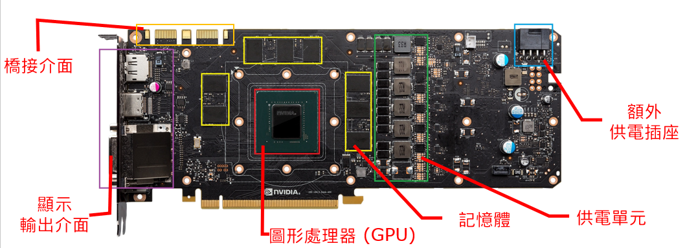
二、匯流排介面接腳
顯示卡用來與主機板連接的介面接腳, 目前已全面統一為 PCI Express × 16 (簡稱 "PCIe × 16") 匯流排：
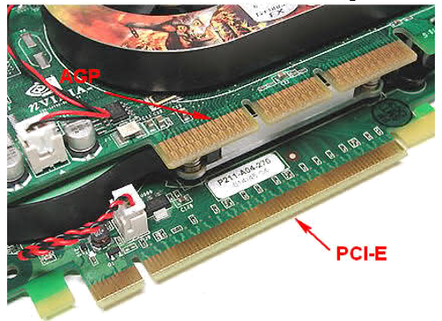
三、視訊輸出介面
將畫面呈現於螢幕上，常見的連接端埠有 DVI、TV-Out (S 端子)、VGA (D-Sub)、Display Port與 HDMI 介面：
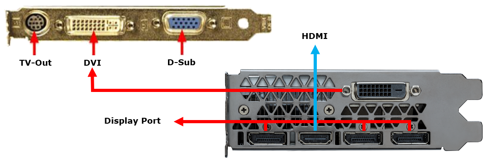
TV-Out (S 端子)
透過此接頭, 我們就可將電腦畫面直接輸出到電視 / 投影機等家電上播放；但由於 S 端子為類比輸出訊號, 因此呈現的畫面品質自然不如數位訊號來得細膩。
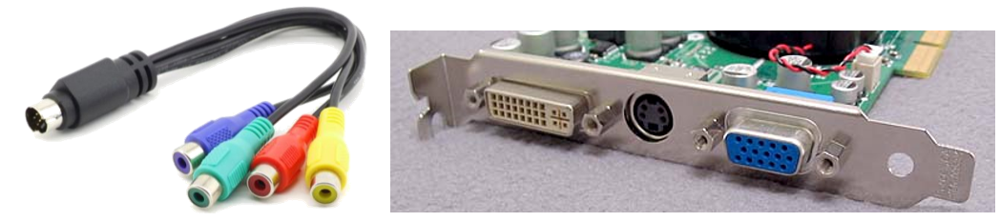
DVI
Digital Visual Interface (數位視訊介面) 是目前顯示 / 輸出的主流介面, 它可直接將顯卡送出的數位 (Digital) 資料, 直接顯示在支援數位訊號的螢幕 (如 LCD) 上；由於少去了數位與類比間的轉換, 因此可保持既有的畫質而不失真。
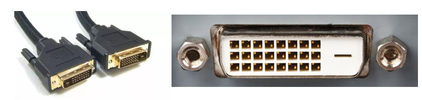
D-Sub
即俗稱的 VGA 輸出埠, 是傳統類比 (如 CRT 螢幕) 時代的主要輸出介面。由於畫面輸出時, 需將原本數位資料轉成類比 (Analog) 訊號, 因此畫質自然比不上數位影像。
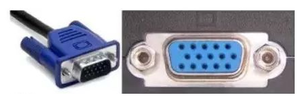
HDMI
全名為 "High Definition Multimedia Interface" (高解析度多媒體介面), 它支援 (相容) 目前的 DVI 數位訊號, 輸出的解析度可達 1,920 × 1,200 (即 Full HD / 1080p 等級) 以上；同時兼具全新一代 HDCP (Highbandwidth Digital Content Protection, 高頻寬數位內容保護) 技術, 以保障原作的智慧財產權。
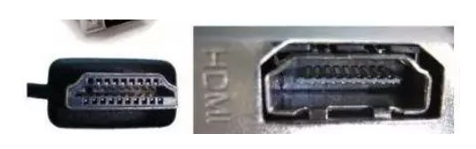
DisplayPort
是另一種與HDMI相似的高畫質媒體介面，可以直接為語音、視訊等提供傳輸通道，也適用於無延遲的遊戲控制，甚至單一接頭就可串聯多螢幕，實現對周邊裝置最大整合，不同於HDMI它無需繳付版權費。
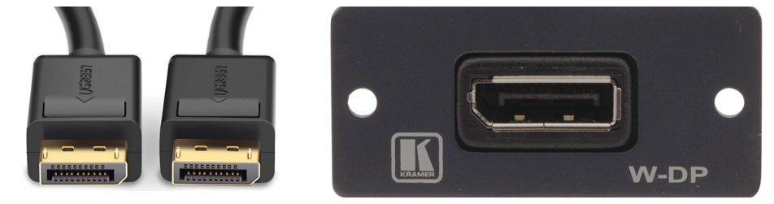
四、雙顯卡技術 － SLI 與 CrossFire
以 SLI (Scalable Link Interface, 可擴充連結介面) 技術為例, 它是透過連接 2 張具 SLI 能力的顯卡, 讓雙 GPU 同時處理、輸出的影像資料, 以提高繪圖處理速度、改善顯示效能；而CrossFire 技術也是採雷同的原理與技巧, 其目的都是讓遊戲玩家可享受更即時、更快速、更流暢的畫面呈現效果！
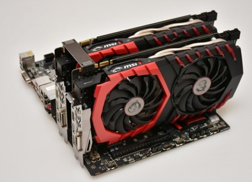
五、PCI Express 規格表
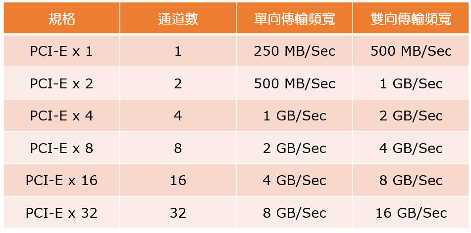
六、顯示晶片
圖形處理器 (GPU, Graphic Processing Unit) 或視覺處理器 (VPU, Visual Processing Unit), 是顯示卡上最重要的核心元件, 其地位有如電腦上的 CPU, 同時更決定了該張顯示卡的等級、規格、與其具備之功能！
七、核心時脈
顯示卡的核心時脈只是輔助性的屬性，在相同的著色器數量下，核心時脈高的產品會比低的好一些
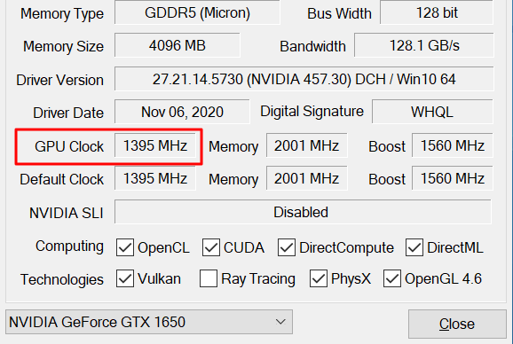
八、顯示記憶體
- 容量大小 - 影響處理能力
- 功用 - 圖像運算時資料交換用
- 類型 - GDDR3、GDDR5、HBM/HBM2及GDDR5X，目前主流多為GDDR5
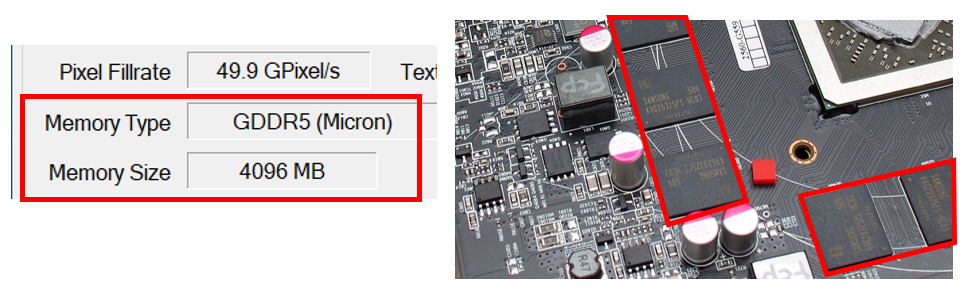
九、記憶體工作時脈
- 顯示卡記憶體工作時脈由早期的100 MHz發展到如今的GDDR5可以達到5000 MHz以上。
- 顯示卡記憶體時脈越高、處理速度愈快、效能愈好。
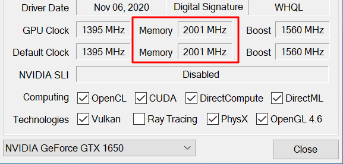
十、匯流排寬度
顯示記憶體傳遞訊號時的資料寬度 (或稱為記憶體匯流排介面), 目前常見的有 64 / 128 / 256 / 512-bit 等寬度大小；匯流排寬度愈大, 代表同時間內可輸送的資料量愈大, 速度 / 效能上自然再加分！
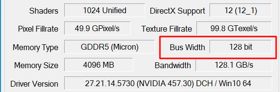
十一、核心代號與製程
- 核心代號 - NVIDIA® GeForce® RTX 2080 、AMD Radeon RX 580
- 製程 - 數字單位愈小, 代表該繪圖晶片在效能、散熱、電耗等各項指標, 都有進一步的提升；如 ATI 產品 14nm, 而 NVIDIA 產品 12~40 nm之間。
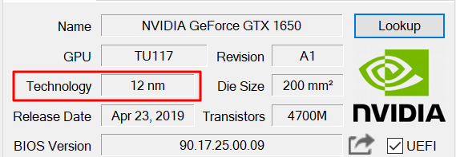
十二、著色器 Shaders
- 大多數人購買顯示卡最關心的就是效能，雖然記憶體頻寬可以判定產品定位，但是影響效能最重要的是著色器的數量
- 著色器通常是以組為單位，AMD一組是128個，nVIDIA之前是一組198個，最新架構也是一組128個
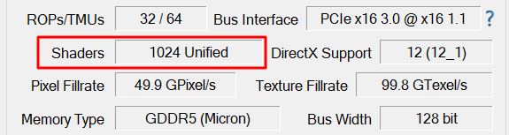
包裝內容物
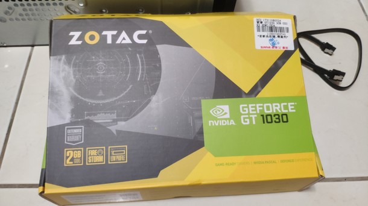
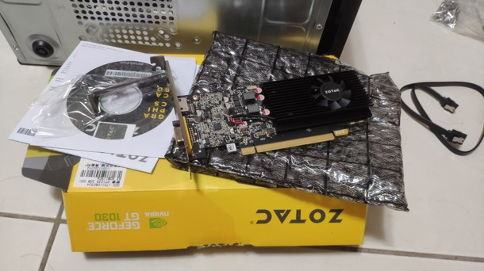
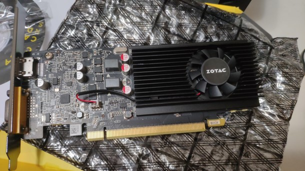
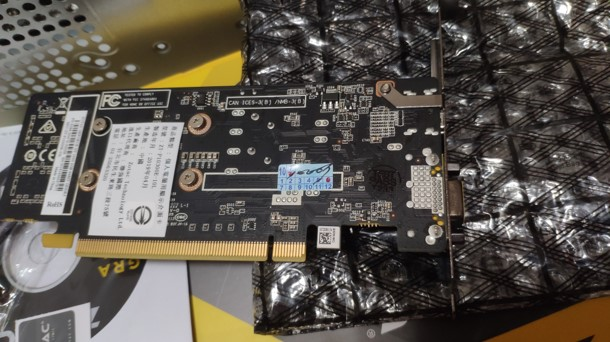